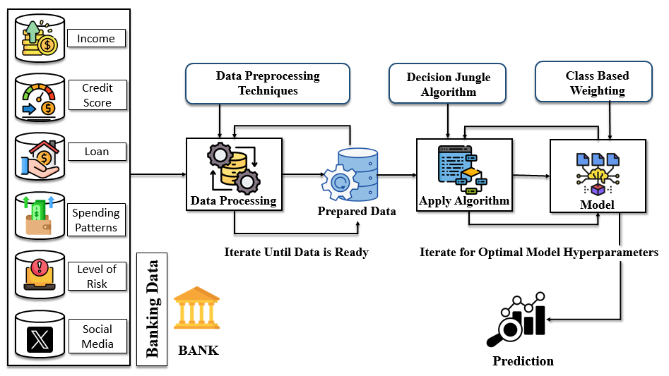
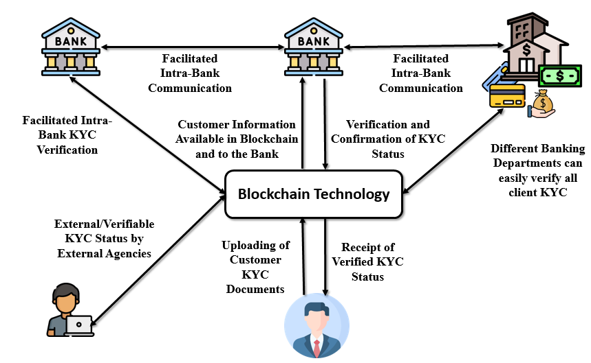
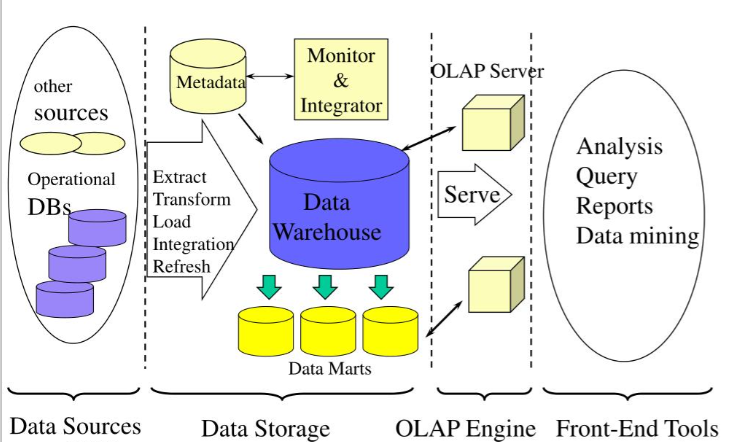
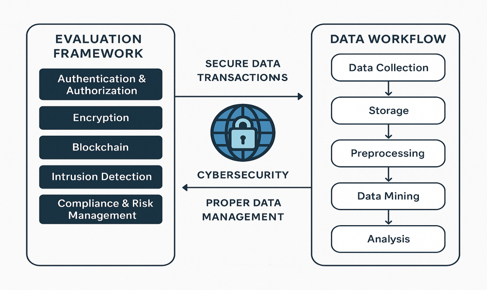

Mining Insider Threats in Enterprise Systems Using Behavioral Data and Cyber Forensics
Proceedings of International Conference on Artificial Intelligence and Networks (ICAIN 2025)
Part of the book series: Lecture Notes in Networks and Systems ((LNNS,volume 1952)) Included in the following conference series:
International Conference on Artificial Intelligence and Networking
Abstract
We found out that Insider threats are hard to detect because attackers use normal access but behave abnormally, making them difficult to identify using traditional security systems In order to overcome we bypass by using several created Techniques discussed below:
- Banking and stock exchange systems are increasingly vulnerable to insider threats because employees or internal users already have legitimate access credentials, making traditional security systems like rule-based monitoring and static firewalls ineffective. With rapid digitization of financial infrastructure, attackers inside the system can perform activities such as unauthorized access, hidden data extraction, or transaction manipulation without easily triggering alarms. This creates a critical gap in conventional cybersecurity approaches, which are not designed to detect behavior-based or intent-based anomalies in real time.
- The proposed system, Threat Sense, is an advanced machine learning-based detection framework that integrates behavioral analytics, temporal pattern recognition, and digital forensics to identify insider threats. It uses multivariate temporal sequence mining algorithms to analyze user behavior over time, detecting deviations from normal activity patterns across different transaction loads and usage conditions. By building a behavioral baseline for each user, it can detect subtle anomalies like unusual login behavior, abnormal transaction timing, or suspicious data access patterns with high accuracy, making it significantly more effective than traditional security systems.
- Testing across three financial institutions showed that the system performs best when data quality is high and behavioral baselines are accurately defined. Its detection capability improves with better structured and cleaner datasets. The system provides continuous real-time monitoring, generating actionable alerts whenever suspicious behavior is detected. Additionally, it maintains a strong digital forensic chain-of-custody, ensuring that all evidence is preserved securely for legal investigations. During penetration testing, Threat Sense successfully detected threats like unauthorized financial data access, covert transaction manipulation, and data leakage, proving its superiority over traditional detection methods.
Department of Computer Science and IT, Institute of Information Technology & Management, GGSIP University, New Delhi, India Correspondence to "Manzoor Ansari"
- The banking and stock exchange sectors face rising insider threats that traditional security systems fail to detect due to trusted internal access and rapid digital transformation.
- Threat Sense is an ML-based framework that uses behavioral analytics and temporal pattern mining to detect abnormal user activities and insider attacks with high accuracy.
- It provides continuous monitoring and forensic-grade evidence tracking, successfully identifying unauthorized access, transaction manipulation, and data leakage in financial systems.
Enhancing Financial Security through Data Mining and Cybersecurity: An Integrated Approach for Threat Detection and Prevention
The study proposes a data mining-based cybersecurity framework that processes large-scale financial data using preprocessing, feature engineering, and dimensionality reduction to generate meaningful security insights.
It combines multiple AI techniques—supervised learning, anomaly detection, and sequential pattern mining using ensemble methods—to accurately detect both known and unknown insider threats.
The system integrates cybersecurity mechanisms like blockchain ledgering, digital signatures, forensic evidence preservation, and privacy protection to ensure secure, compliant, and tamper-proof financial transactions. ada witd critical infrastructure security systems. their LLM APIs to engineers and other companies.

Working Structure of Machine Learning Pipelining for Risk Prediction and Threat Detection in Banking and Financial Systems in Data Warehousing and Data MiningProblem Statement & Key Challenges
Those who develop different kinds of applications using these Machine Learning Techniques and their software knowledge are called Data Minning or Blockchain Lang Engineers. Applications such as:
- The system combines data mining techniques with machine learning approaches such as supervised learning, anomaly detection, and sequential pattern mining to identify both known and unknown insider threats from complex financial and enterprise data.
- It integrates continuous real-time monitoring with advanced cybersecurity mechanisms to detect suspicious activities instantly while also preserving digital forensic evidence for investigation and legal validation.
- The framework combines strong security enforcement with privacy-preserving methods and regulatory compliance measures, ensuring secure operations without violating user privacy or legal requirements in enterprise environments.
Problems that we found and solution by passing different Intercepting Challenges by using several Techniques we got the way to recover the data as well.
 
Ethical and Legal Considerations
Ethical data handling requires organizations to ensure user privacy, obtain informed consent, and prevent bias in machine learning systems that may lead to unfair or discriminatory decisions. Legally, institutions must comply with regulations such as GDPR and CCPA, ensuring transparency, data minimization, and user rights like access and deletion, as non-compliance can result in penalties and loss of trust.
Secure data exchange and cybersecurity systems are widely used in banking for secure cross-border payments, in e-commerce for fraud prevention and safe transactions, in healthcare for protecting patient records, and in government systems for digital identity and secure communication. Blockchain and smart contracts further enhance transparency and automation in decentralized finance and global trade systems.

Data Workflow in Cybersecurity for Secure TransactionConclusions and Future Direction
In the coming years, data mining and cybersecurity will become increasingly important for securing and managing large-scale data across industries. Data mining techniques will evolve to provide more accurate real-time insights,
anomaly detection, and predictive analysis for complex systems.
At the same time, cybersecurity will become more intelligent by integrating AI, advanced analytics, and blockchain to proactively detect threats and
ensure data integrity. Together, these technologies will help organizations prevent fraud, improve decision-making, and build secure and intelligent digital infrastructures.